Що не працює зараз
Батьки дітей з інвалідністю отримують відмови у звільненні зі служби через наявність другого з батьків — навіть коли дитина потребує участі обох.
№15057 · повертаємо право на звільнення зі служби

Ми повертаємо право на звільнення з військової служби батькам, які виховують дітей з інвалідністю. Об’єднуємо родини й експертів задля ухвалення законопроєкту №15057 та рівного захисту кожної дитини.
Проблема та рішення · №15057
Дитина потребує догляду й участі батьків незалежно від того, чи проходить хтось із них військову службу. Її потреби мають бути визначальними.
Батьки дітей з інвалідністю отримують відмови у звільненні зі служби через наявність другого з батьків — навіть коли дитина потребує участі обох.
Діти з однаковим правовим статусом мають отримувати рівний державний захист і реальний, а не формальний догляд — незалежно від статусу їхніх батьків.
Домагаємося його ухвалення, щоб повернути право на звільнення з військової служби батькам, які виховують дітей з інвалідністю.
Про нас говорять
Публікації, інтерв’ю, відеосюжети та матеріали про родини військовослужбовців, які виховують дітей з інвалідністю, і необхідність підтримки законопроєкту №15057.
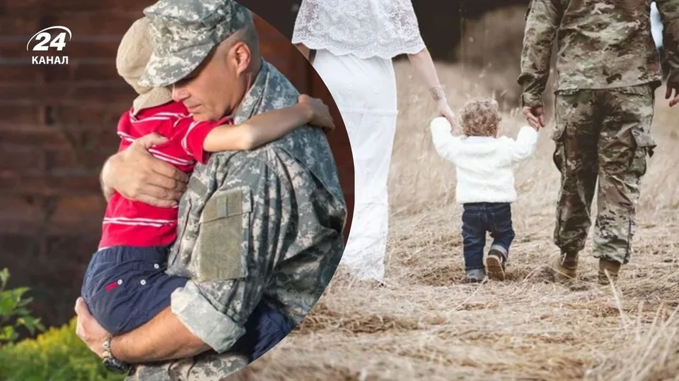
Серія матеріалів про різницю між правом на відстрочку та можливістю звільнення з військової служби, а також про заклик підтримати законопроєкт №15057.
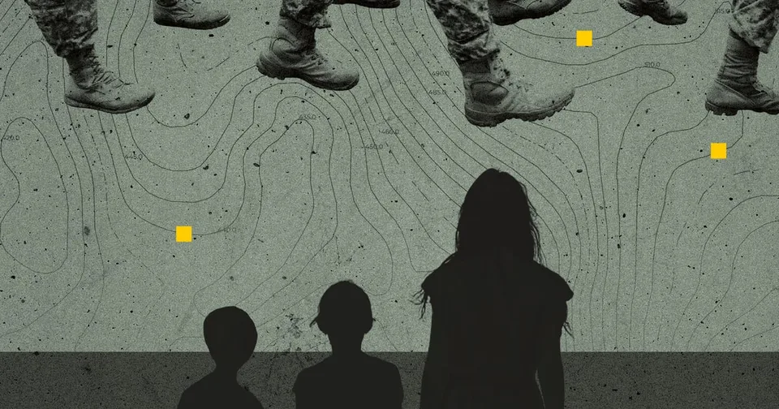
Історія родини, яка потребує постійної участі батька у догляді за двома дітьми з інвалідністю.
Публікація про ризик нових обмежень замість повернення права на звільнення зі служби.
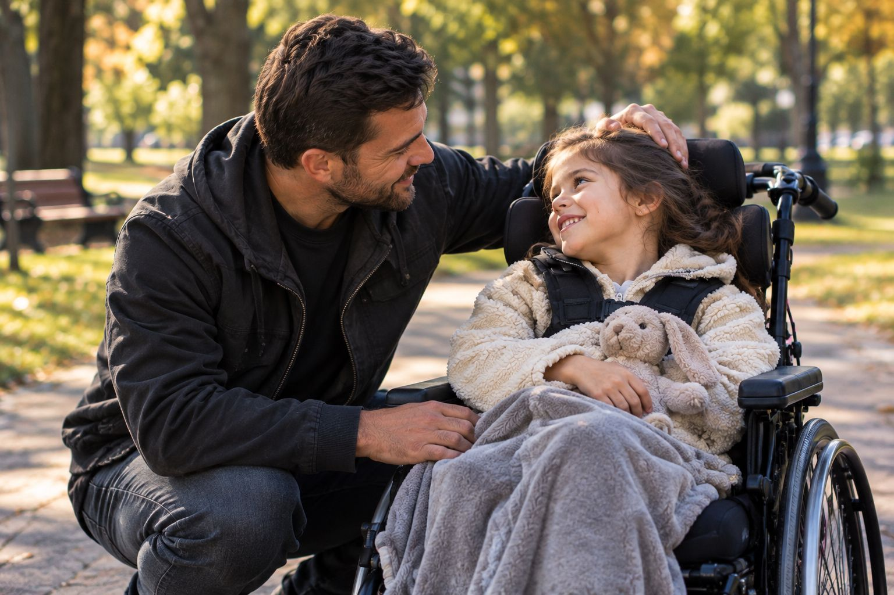
Адвокатка пояснює відмінність між відстрочкою та звільненням зі служби, правову колізію й рішення, яке пропонує законопроєкт №15057.
Першоджерело дискусії про зміни гарантій для родин. Позиція правозахисниці: усувати нерівність розширенням права на звільнення, а не новими обмеженнями.
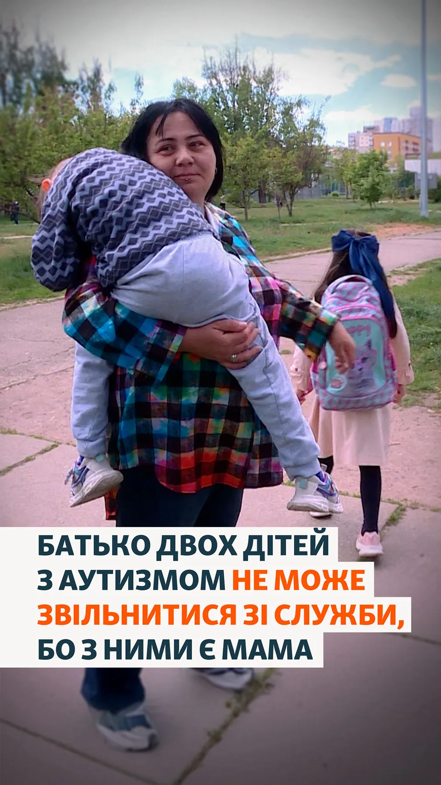
Матеріали про щоденний догляд за дітьми з інвалідністю та потребу родин у фізичній присутності батька.
Матеріал про ризики для дітей з інвалідністю в дискусії щодо зміни сімейних гарантій.
Серія правових матеріалів про неможливість звільнення військовослужбовців за сімейними обставинами та втрату сімейних гарантій після мобілізації.
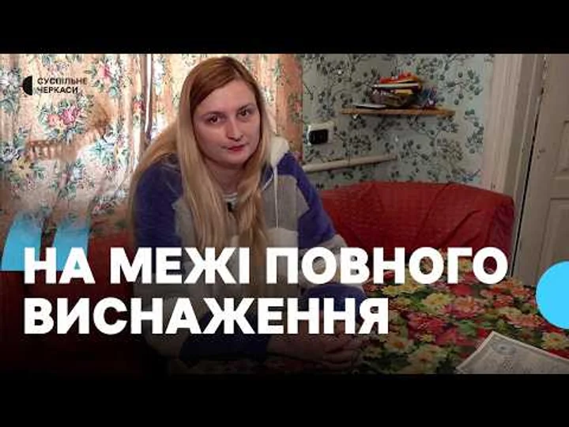
Історія мами, яка самостійно забезпечує лікування, реабілітацію та постійний догляд за дітьми.
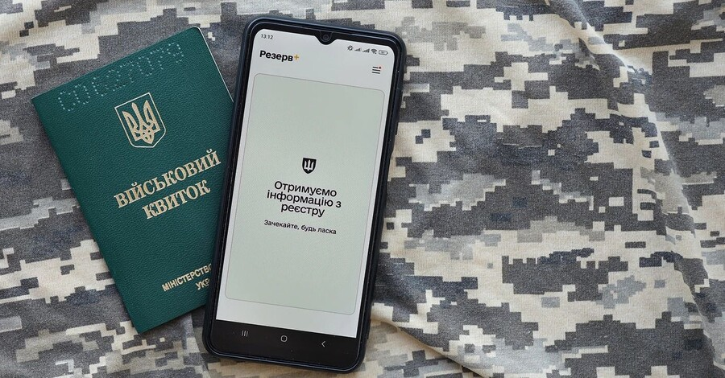
Огляд пропозицій із коментарем адвоката: чому однакові потреби дітей не мають призводити до звуження сімейних гарантій.
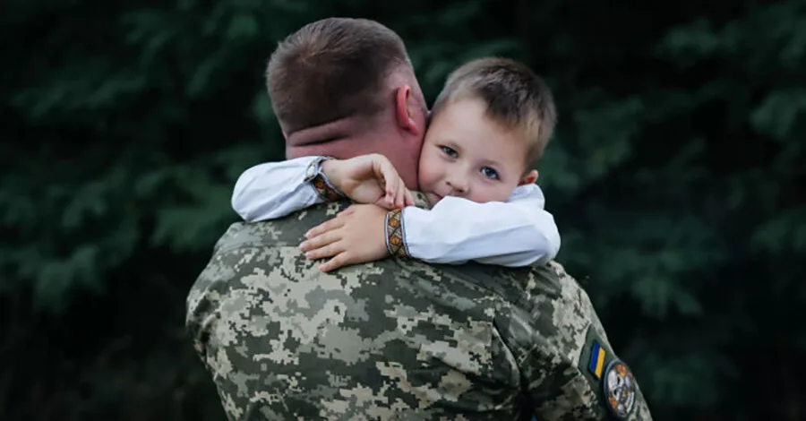
Матеріал про правову колізію, через яку однакові сімейні обставини мають різні юридичні наслідки.
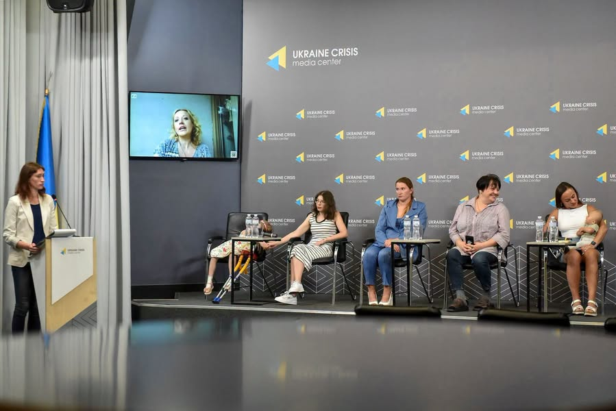
Матеріали про правову колізію та становище родин, у яких діти з інвалідністю залишаються без допомоги батька.
Публікація про проблему нерівного захисту дітей з інвалідністю після мобілізації одного з батьків.
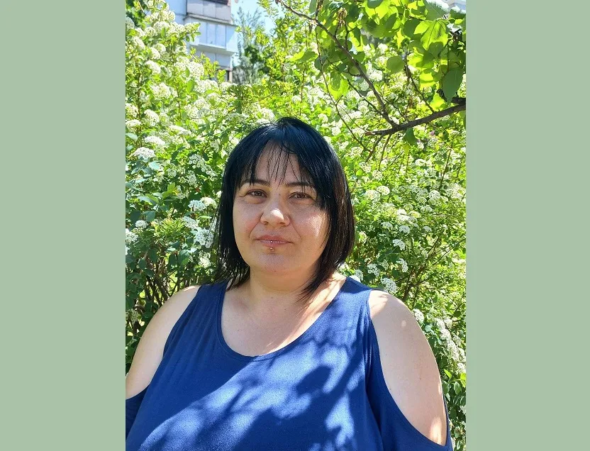
Матеріал про відчай родини та вимогу забезпечити рівні державні гарантії для дітей з інвалідністю.
Дар’я Тарасенко коментує пропозиції Офісу Військового омбудсмана та пояснює різницю між обговоренням змін і ухваленим рішенням.
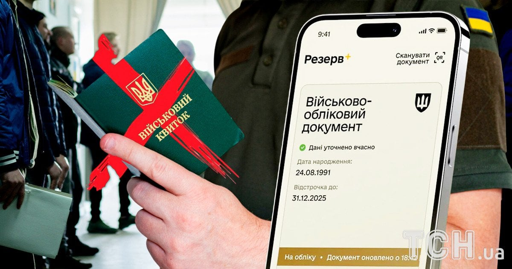
Огляд можливих змін для родин людей з інвалідністю та аргументів на користь розширення права батьків на звільнення зі служби.
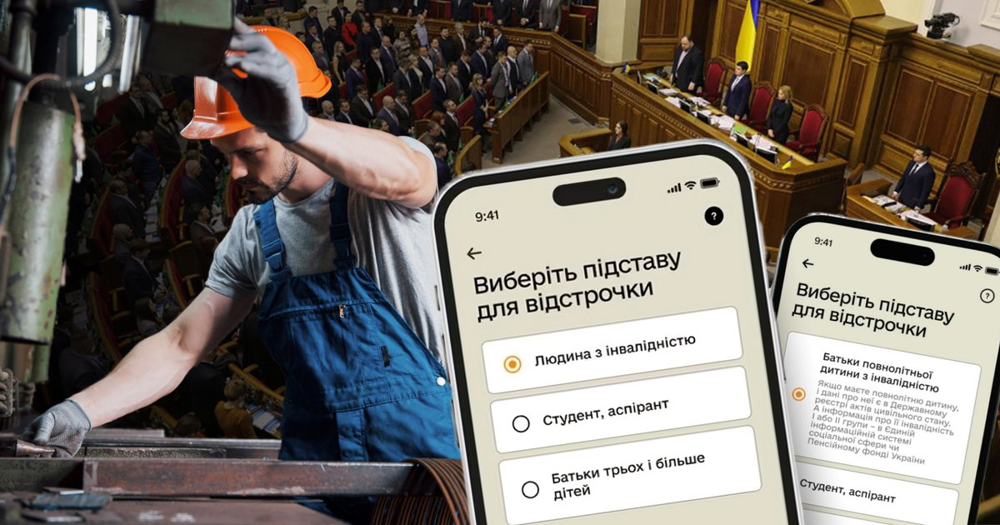
Ширший огляд мобілізаційних пропозицій із коментарями юристів; окремо — ситуація батьків дітей з інвалідністю та законопроєкт №15057.
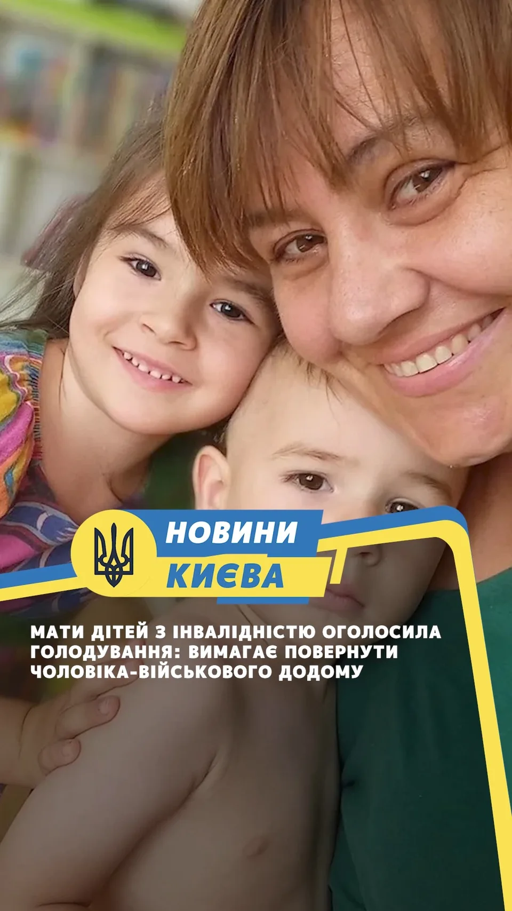
Відео про проблему звільнення зі служби батьків, чиї діти потребують постійного догляду.
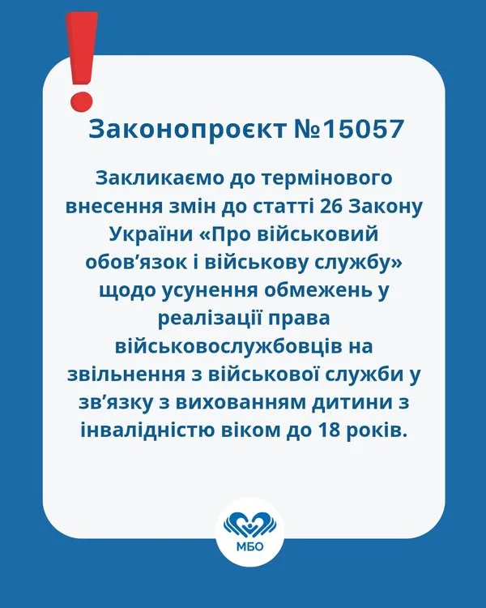
Публічна позиція представників батьківської спільноти щодо необхідності усунути правову нерівність.
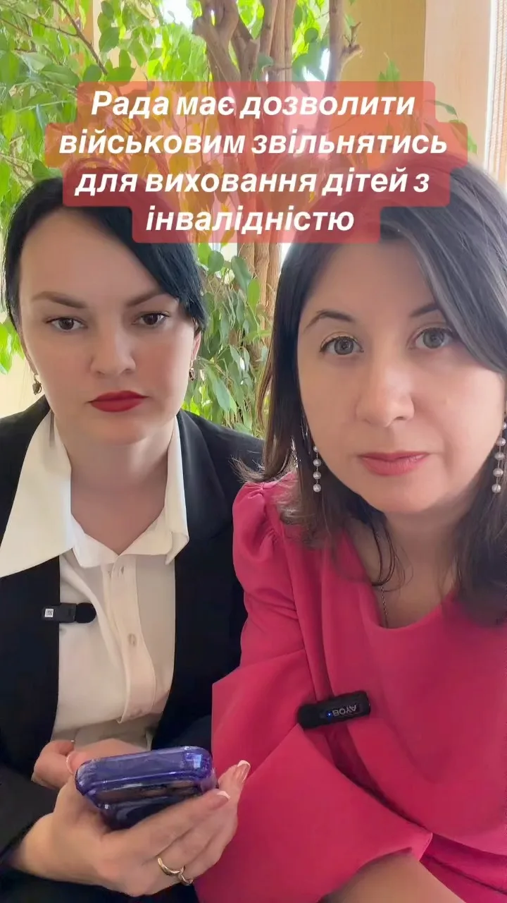
Матеріал про правову нерівність, із якою стикаються родини, що виховують дітей з інвалідністю.
Новина про запропоновані додаткові умови для батьків дітей з інвалідністю.
Новина про можливий перегляд правил для родин людей з інвалідністю.
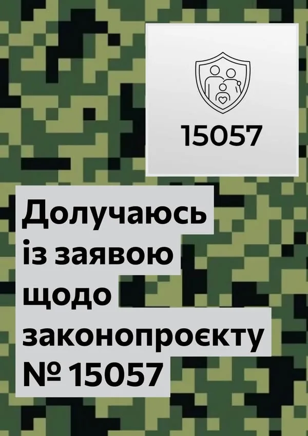
Публікація про необхідність реального, а не формального захисту дітей з інвалідністю.
Про нас
ГО «Майбутнє має право» об’єднує родини військовослужбовців, які виховують неповнолітніх дітей з інвалідністю, а також фахівців і небайдужих громадян, готових працювати задля рівного захисту прав дітей.
Наша першочергова мета — повернути право на звільнення з військової служби батькам дітей з інвалідністю через ухвалення законопроєкту №15057. Ми діємо позапартійно й спираємося на юридичну, медичну, соціальну та експертну аргументацію.
Рівний державний захист незалежно від статусу батьків.
Юридична, медична, соціальна та експертна оцінка.
Усунення правової колізії та недискримінації дітей.
Спільна дія
Родини, громадські організації та фахівці об’єдналися навколо спільної вимоги. Ознайомтеся з результатами презентації та долучайтеся до резолюції на підтримку законопроєкту №15057.
Приєднатися до резолюції
Завантажте шаблон, внесіть усі необхідні дані, підпишіть заяву одним із двох способів і додайте готовий файл до форми.
Повертаємо право на звільнення зі служби
Документ · PDF
На мобільному пристрої документ відображається сторінками по ширині екрана. Також його можна відкрити окремо або завантажити.
Документ · PDF
На мобільному пристрої документ відображається сторінками по ширині екрана. Також його можна відкрити окремо або завантажити.